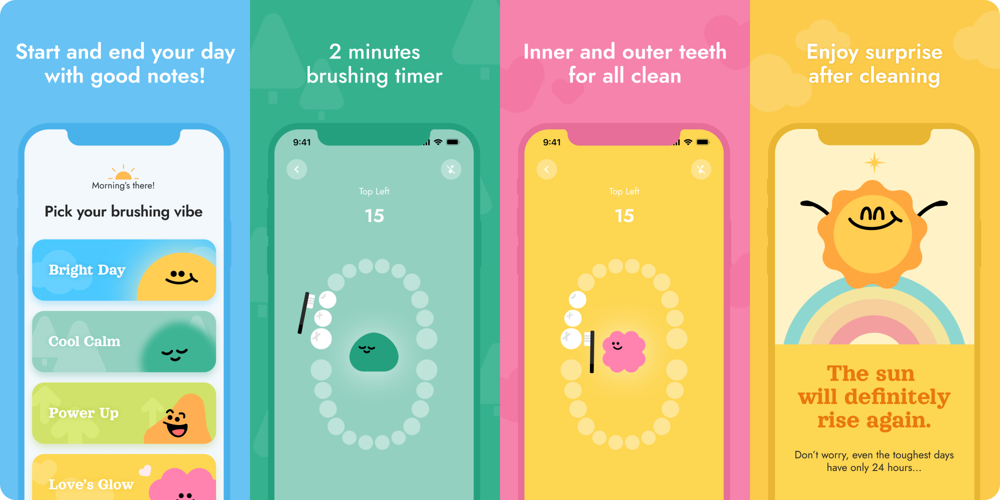
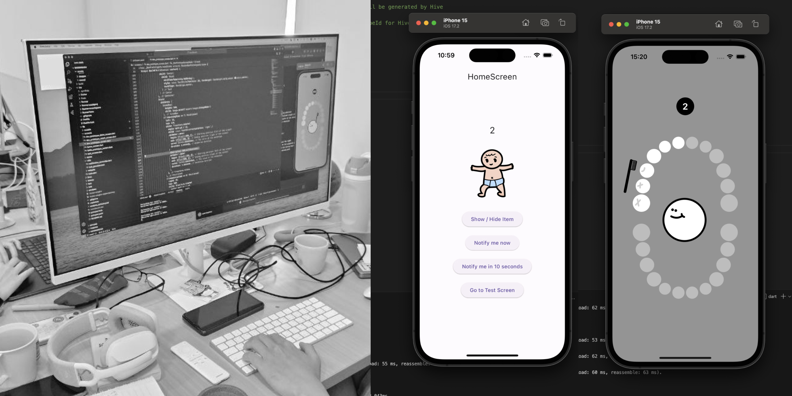
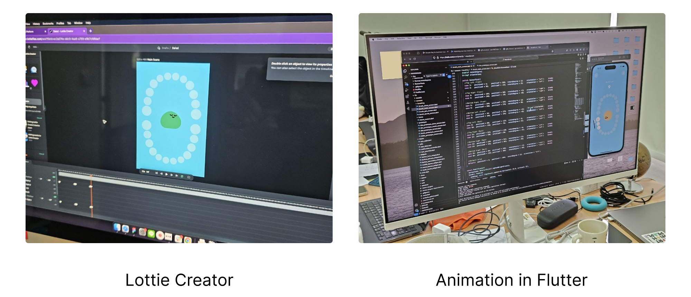
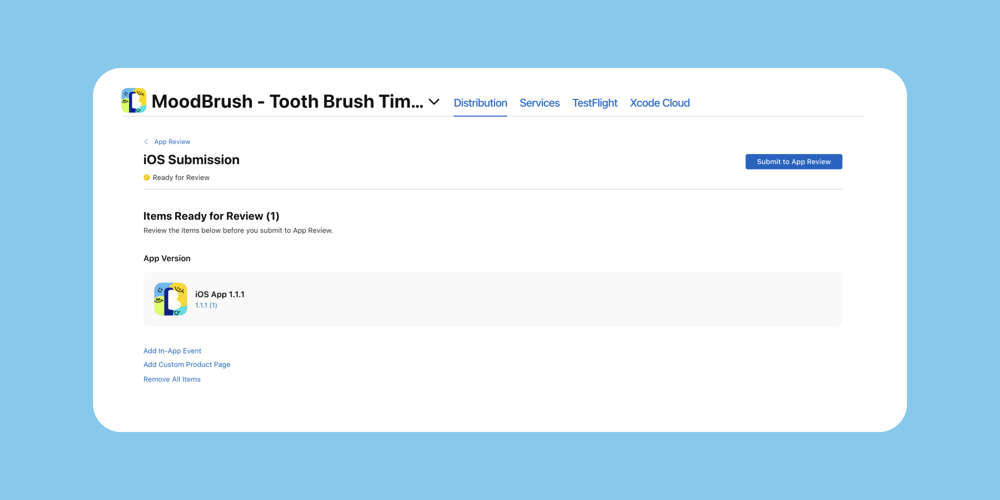

จากไอเดีย สู่ App Store ใน 2 สัปดาห์
โดย AHA Lab
เคยสงสัยไหมว่าแอปที่ใช้ในแต่ละวัน มันถูกสร้างขึ้นมาได้อย่างไรนะ? เราเลยอยากมาเล่าประสบการณ์สร้างแอปจากมุมมองของ Designer ให้ฟัง โดยเนื้อหาจะมี 3 ส่วน
หาไอเดีย และจัดทีม
การหาไอเดีย: เราได้ทำ Survey ผ่านการยิง Ads บน Social Network เพื่อดูความสนใจของตลาดแบบเร็วๆ ที่จะทำให้ทีมมั่นใจในไอเดียมากขึ้น (โดยปกติ เราคงทำ user interview แต่ด้วยเวลาที่จำกัด ทำให้เราเลือกวิธีที่เร็วและใช้แรงน้อยที่สุดคือวิธีนี้) และแอปที่ผ่านเข้ารอบคือ “MoodBrush” (มู้ดบรัช) โดยเป็นแอปมาช่วยให้การแปรงฟัน 2 นาที สนุกขึ้น และไม่ใช่เรื่องน่าเบื่อ
การตั้งตี้-จัดทีม: ปกติทีมเราทำเรื่องของ Research และ UX/UI Design ซึ่งวนเวียนอยู่กับ Business และ Marketing Team แต่ส่วนของ Development จะเป็นโลกที่พวกเราเข้าไปแตะน้อยมากๆ ที่เราอยากจะเรียนรู้ และรู้จัก ครั้งนี้จึงเป็นความตั้งใจของทีม ที่อยากทำ Product ของตัวเองตั้งแต่ 0 ถึง 100 ซึ่งด้วยความที่ทีมเราเล็กมี แค่ 4 คน เราจึงวาง role ในทีมไว้แบบนี้
- Business & Marketing
- UX/UI Designer
- Content Creator
- Software Developer
ซึ่ง role ก็จะวนเวียนกันไป ตามคนที่ว่าง ณ ตอนนั้น (ทุกคนแทบจะทำทุกอย่างจริงๆ)
// Dev มือใหม่ กับ Hidden Guru
ทีมเราเป็น Designer กันทุกคน จึงต้องลุกขึ้นมาหัดเขียน Code กันใหม่ โดยเราเลือกเรียนภาษา Flutter เพราะคิดว่ามันสามารถเขียนครั้งเดียว แล้วสร้างแอปได้ทั้งฝั่ง iOS และ Android เลย
ก่อนจะมาทำ MoodBrush ทางทีมได้มีการลองแอปแรกไปแล้วชื่อ Kanji Card ที่ทำมาจากปัญหาของคนในทีมที่จำคันจิไม่ได้ซักที ครั้งนั้นเราใช้เวลาทั้งหมด 2 เดือน และ มีคุณครูผู้รอบรู้ของเราชื่อ ChatGPT มาช่วยให้พวกเรารอดไปถึงฝั่ง
ปล. ถ้าอยากลองเล่นแอปแรกของพวกเรา โหลดได้ที่นี่นะ
ทำแอป 2 อาทิตย์
2 สัปดาห์ กับการเข็น MoodBrush ให้ Launch จริงใน App Store ถือว่าสั้นมาก ถ้าเทียบกับแอปแรกที่ใช้เวลา 2 เดือน หรืองานโปรเจ็ค UX ที่ปกติพวกเราทำกับลูกค้ากันหลักปี ดังนั้นเราจึงต้องกำหนดทุกอย่างให้ชัดเจนตั้งแต่แรก
1. เริ่มจากกำหนด Experience Goal
ว่าเราต้องการที่จะมอบประสบการณ์แบบไหนให้ user เมื่อใช้งานเสร็จ ซึ่ง Experience Goal ของ MoodBrush คือ “การทำให้คนมีความสุข ในช่วงเวลา 2 นาทีที่แปรงฟัน”
เนื่องจากการแปรงฟันเป็นงานที่ต้องทำซ้ำๆ กันทุกวัน วันละ 2-3 รอบ คนจึงมักรีบแปรงให้เสร็จไปเพื่อไปทำอย่างอื่น ทำให้แปรงไม่สะอาด ดังนั้น เราจึงอยากให้คนได้ใช้เวลาในช่วงแปรงฟันในการดูแลตัวเอง สามารถมีความสุขไปกับมันได้นานขึ้น
เราจึงศึกษาเพิ่มเติมเรื่องของ สารสร้างความสุข ที่ถูกนำมาใช้สร้างเป็น Mood และ Character ที่จะมอบความสุขแต่ละรูปแบบให้กับเราตอนแปรงฟัน มี 4 Mood ด้วยกันคือ
- “Bright day” ตัวแทนของ โดปามีน (Dopamine) หรือ สารแห่งความพึงพอใจ
- “Cool calm” ตัวแทนของ เซโรเทนิน (Serotonin) หรือ สารควบคุมอารมณ์
- “Power-up” ตัวแทนของ เอนโดรฟิน (Endorphin) หรือ สารแห่งความสุข
- “Love’s glow” ตัวแทนของ ออกซิโทซิน (Oxytocin) หรือ สารแห่งความรัก
2. ร่าง Journey, Wireframe & Prototype
เพื่อให้ทั้งทีมเห็นภาพการทำงานของแอปได้ชัดเจนและตรงกัน เราจึงสร้าง User Journey, Wireframe และ Prototype ขึ้น เพื่อใช้ในการสื่อสาร โดยเฉพาะกับ Developer เพื่อให้รู้ข้อกำจัดก่อนว่าอะไรทำได้-ไม่ได้ หรือยากแค่ไหน จนไปถึงของที่ทีม Design ต้องเตรียมไว้ให้
// เมื่อมีสิ่งที่อยากทำ เยอะกว่าเวลาที่จะ Dev
เมื่อทั้งทีมเห็นภาพร่วมกันแล้ว สิ่งที่ขาดไม่ได้ในการทำ Project แบบสั้นๆ นี้คือการกำหนดตัว MVP (Minimum Viable Product) ว่า เราจะสร้างแอปที่ยังตอบ experience goal ที่อยากได้ได้อย่างไร โดยใช้แรงน้อยที่สุด โดยในกรณี MoodBrush เรากำหนดให้
- เป็นแบบ Offline จะได้ไม่ต้องเตรียม Online Server
- เป็นแอปฟรี (ในช่วงแรก) จะได้ไม่ต้องวุ่นวายกับ Payment
- ใช้ ภาษาอังกฤษ เป็นหลัก จะได้ไม่ต้องเตรียม 2 ภาษา
- รองรับเฉพาะ Device ของ iOS โดยเน้นที่ iPhone รุ่น SE ถึง 15 Pro เป็นต้น
ข้อจำกัดพวกนี้คือสิ่งที่พวกเราได้เรียนรู้มาจากการทำแอปแรก เช่นเรื่องของการรองรับทั้ง 2 OS แม้ว่า Flutter จะสามารถ Build (สร้างแอป) ได้ทั้งสอง 2 OS แต่ในความเป็นจริงเราเจอปัญหาว่า มีหลายๆ Plug-in ใช้ได้บน OS หนึ่งแต่ไปพังบนอีก OS หนึ่ง ซึ่งกินเวลานานมากๆ กว่าจะแก้ได้
3. ทำ Mood & Tone และ UI Design
UI เลือกใช้โทนสีสด เพื่อให้เข้ากับ Experience Goal “การทำให้คนมีความสุข ในช่วงเวลา 2 นาทีที่แปรงฟัน” และทำสีให้กับแต่ละ Mood เช่น Bright day ต้องสื่อถึงความสนุกสนาน, Cool calm ต้องสื่อถึงความผ่อนคลาย, เป็นต้น เมื่อได้คู่สีแต่ละกลุ่มแล้ว จะนำมาขึ้น UI จากโครง Wireframe ที่ร่างไว้
// Dev จะใช้เวลานี้ทำ Proof-of-Concept (POC)
ก่อน Design นิ่ง ทาง Dev ก็ไปเตรียม Feature ที่ปกติแอปน่าจะต้องใช้เช่น Navigation, Notification, Database หลักจากได้เห็น Wireframe แล้วจึงลองทำโครงสร้างของแอปตาม Feature ที่กำหนดใน Wireframe เพื่อดูว่ามีปัญหาไหน ที่จะเกิดขึ้นบ้าง หรือตรงไหนที่จะใช้เวลานาน จะได้สามารถแจ้ง Design ให้ช่วยแก้ปัญหาได้
4. เพิ่มชีวิตชีวา ด้วย Animation และ Sound Effect
ตามที่กำหนดตอนออกแบบ UI Design ซึ่งทำให้แอปน่าใช้งานมากขึ้น ในตอนนี้เราได้รู้จักกับ Lottie Creator เป็นเวปสำหรับทำ animation เอาไว้ใช้บนเว็บหรือแอป ซึ่งง่ายและสะดวกที่สุดในการนำมาใช้งานกับ Developer ด้วยรูปแบบไฟล์ .json ที่เล็กและใช้ได้ทั้ง iOS, Android, เว็บไซต์ และ React Native รวมถึงย่อ-ขยายภาพโดยที่ภาพไม่แตก
นอกจากนี้ ทีมยังต้องหา เสียงเพลง มาใช้ใน Scene ต่าง ๆ รวมถึงการตัดให้เวลาเหมาะสม เช่น ก่อนแปรง, ขณะแปรงฟัน เป็นต้น เพื่อให้สอดคล้องกับแต่ละ Mood ที่ user เลือก ซึ่งสิ่งที่ยากในขั้นตอนนี้คือการ ดูเรื่อง License เพลงให้ถูกลิขสิทธิ์ และถูกต้อง
ส่งแอปขึ้น App Store
หลังผ่านการทำงาน (และปวดหลัง) กันมา ในโค้งสุดท้าย Dev จะทำเอาแอปขึ้น Test Flight เพื่อให้ภายในทีมที่ตอนนี้ทุกคน ผันตัวมาเป็น QA ทำการ Test แอป ตาม Test Case ที่ได้เขียนไว้ เพื่อให้มั่นใจว่า Feature, Function ทุกอย่างทำงานได้ถูกต้อง ไม่มี Bug (?) จากนั้นแอปของเราก็ได้ฤกษ์ขึ้น App Store
ส่งท้ายด้วยการ Retro รวมกับขอบคุณกันและกัน สำหรับความตั้งใจตลอด 10 วันที่ผ่านมา~
ล้ม-เรียน-ลุกใหม่
การทำแอป ไม่ใช่สิ่งที่ทำครั้งเดียวแล้วจะดี หรือเสร็จ ในทุกๆ ขั้นตอน เราจะต้องผิดพลาด เรียนรู้ และเริ่มใหม่ วนไปเรื่อยๆ ซึ่งไม่ใช่เส้นตรงเลย นั่นคือสิ่งที่ทีมได้เรียนรู้
เราได้เข้าใจการทำงานของ Product ทั้ง Cycle มากขึ้น เข้าใจหัวอกคนแต่ละ Role ในทีมมากขึ้นเมื่อได้ลองมาสวมหมวกเป็นคนนั้นจริงๆ เช่น
- ทำไม Dev ไม่ยอมแก้ UI จุดเล็กๆ ให้ ตามที่ Designer ร้องขอ (หลายครั้งเกิดจาก Dev มีงานหลังบ้านที่ต้องทำ ที่สำคัญต่อการใช้งานมากกว่า การแก้ไข UI ที่ยังไม่สวยเพอเฟ็ค ซึ่งงานนั้น Designer อาจจะมองไม่เห็น)
- ทำไม Business, Marketing, Design ถึงควรคุยกันมากขึ้น? (การตัดสินใจทาง business ที่ชัดเจนทำให้ทีมมุ่งไปยังจุดที่ถูก ไม่หลงทาง ซึ่งมี User ในใจที่ตรงกัน และเหมือนกัน)
ล้ม-ลุก ข้อที่ 1: AI ช่วยลดแรง และเพ้อฝันได้ดี
ทำให้เรามีเวลาทำงานส่วนอื่นๆ ไม่ว่าจะเป็นการแปลงข้อมูลจาก Sheet มาเป็น Code, ภาพร่างสำหรับคุยไอเดียเบื้องต้น เป็นต้น อะไรที่เป็นงานซ้ำๆ จำเจ สามารถให้ AI ช่วยได้ นอกจากนี้ AI ยังมีความคิดที่นอกกรอบ และสดใหม่ ใช้หา idea ที่อยู่นอกเหนือจากสิ่งที่เราคิด และต่อยอดได้ดีขึ้นได้มาก
ล้ม-ลุก ข้อที่ 2: รีบ Dev เร็วเท่าไหร่ ความเสี่ยงยิ่งสูง (เจ็บยิ่งหนัก)
การทำ Prototype ด้วยการ Dev จริง ที่เร็วเกินไป (เพราะทีม Dev เราร้อนวิชาแหละ) ทำให้ เมื่อนำไปให้ user ลองใช้ และต้องแก้ จะเกิด cost ของการแก้ทั้งแรงและเวลา แบบปาดเหงื่อ เลยทีเดียว …อย่าทำอีกเลยนะ
ล้ม-ลุก ข้อที่ 3: Animation ไม่ง่าย แต่เป็นไปได้
การทำ Animation ดูเป็นงานใหม่ของ Designer และ Lottie ก็เกิดมาเพื่อช่วยเรา (ฮาา) แต่อาจจะต้องวางแผน scene ของ animation ก่อน ซึ่งทำได้ง่ายๆ ด้วย Prototype บน Figma ด้วย Smart Animate Transition เพื่อให้เรามั่นใจว่า เราต้องเตรียมอะไรบ้าง ก่อนไปลงของจริง
ล้ม-ลุก ข้อที่ 4: MVP และ POC คือสิ่งจำเป็น ถ้าทุนน้อย
MVP คือการตัด scope ให้เหลือต่อของสำคัญจริงๆ ที่ถ้าเอาออกไป เราจะไม่ได้ experience ตามที่วางไว้ และ POC คือการ รีบ พิสูจน์ในจุดที่เสี่ยงของ app ให้เร็วที่สุด เพื่อรู้ความเป็นไปได้
ขอขายของ… หน่อยนะ
- ใครอยากเห็นว่าแอป MoodBrush เสร็จแล้วเป็นอย่างไร โหลดได้ที่นี้เลย
- ฝากติดตาม App หน้าของพวกเราที่ทำขึ้นเพื่อ “คนปวดหลัง”
หมายเหตุ
โปรเจค “MoodBrush” เป็นการสร้างแอปภายใต้เงื่อนไขให้เสร็จในเวลาที่กำหนด (2 สัปดาห์) จึงไม่ได้มี Feature ที่มีความซับซ้อนมากนัก กระบวนการสร้างแอปนี้จนเสร็จ อาจเทียบเท่ากับการทำงาน 1 Module ของแอปทั่วไป ซึ่งมองว่าสามารถนำวิธีการทำงานไปปรับใช้ได้
บทความแชร์ประสบการณ์การทำแอปนี้ เป็นการนำเสนอจากมุมของ Designer ที่ทำทั้งส่วนของการ Design และ Dev กันเอง (พร้อมอาจารย์ ChatGPT) จึงไม่อาจกล่าวได้ว่ามีกระบวนท่าไร้เทียมทาน… ก็ยังเพิ่งเริ่มและเรียนรู้ใหม่ในทุกวันอยู่ ซึ่งเราเปิดรับทุกความเห็น สนใจก็มาร่วมพูดคุยกันได้นะ